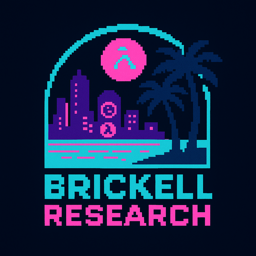

Brickell Research

Systems thinking, without the thinking.
1 About
We are an independent research lab focused on exploring interesting ideas in the interaction between system reliability and programming languages.
We ❤️ building with Gleam and are finding ways to give back through sponsorships and contributions.
2 Projects
Active research projects:
Caffeine: a programming language for generating reliability artifacts from service expectation definitions.
Status: Active Development
3 Speaking
Upcoming talks and presentations:
University of Utah PLT Department Lecture
Title: 10,000 Lines Later: When a Tool Became a Compiler
February 12, 2026 | Salt Lake City, Utah, USA 🇺🇸Gleam Gathering ’26
Title: 10,000 Lines Later: When a Tool Became a Compiler (and I Became a Gleamlin)
February 21, 2026 | Bristol, UK 🇬🇧
4 Contact
For inquiries, collaborations, or questions, please email us.
Website powered by Racket’s Scribble